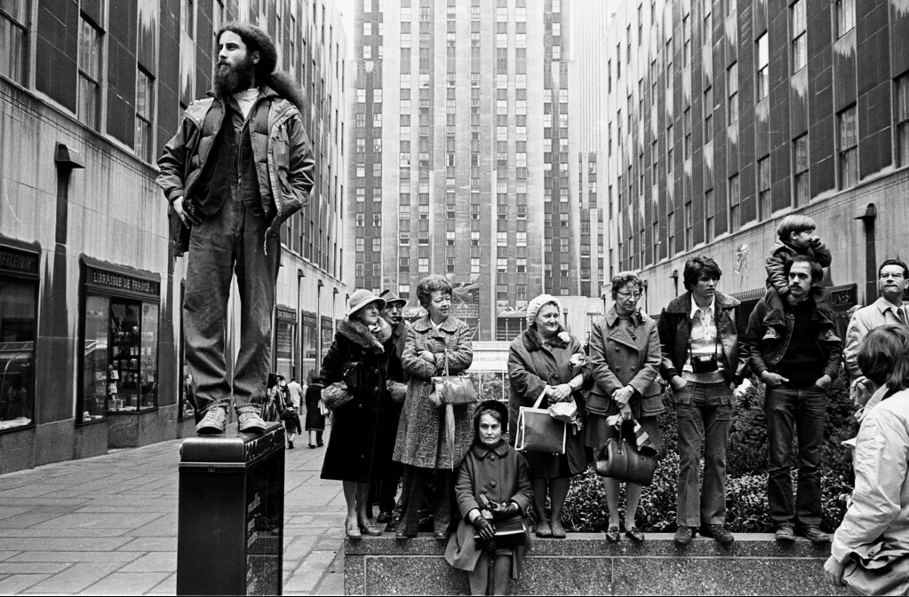
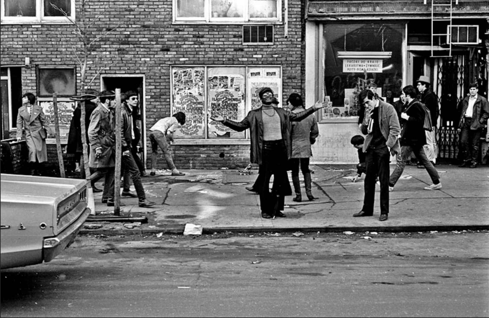
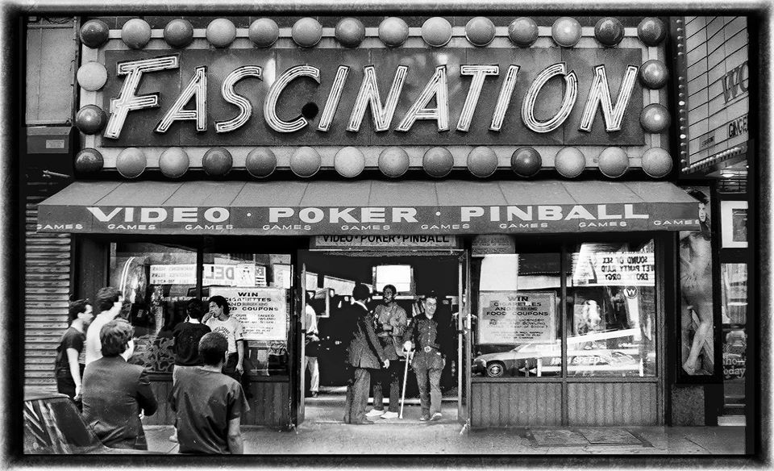
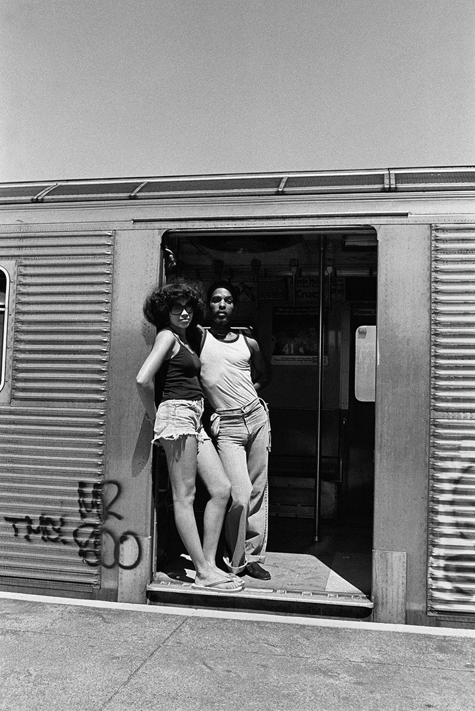
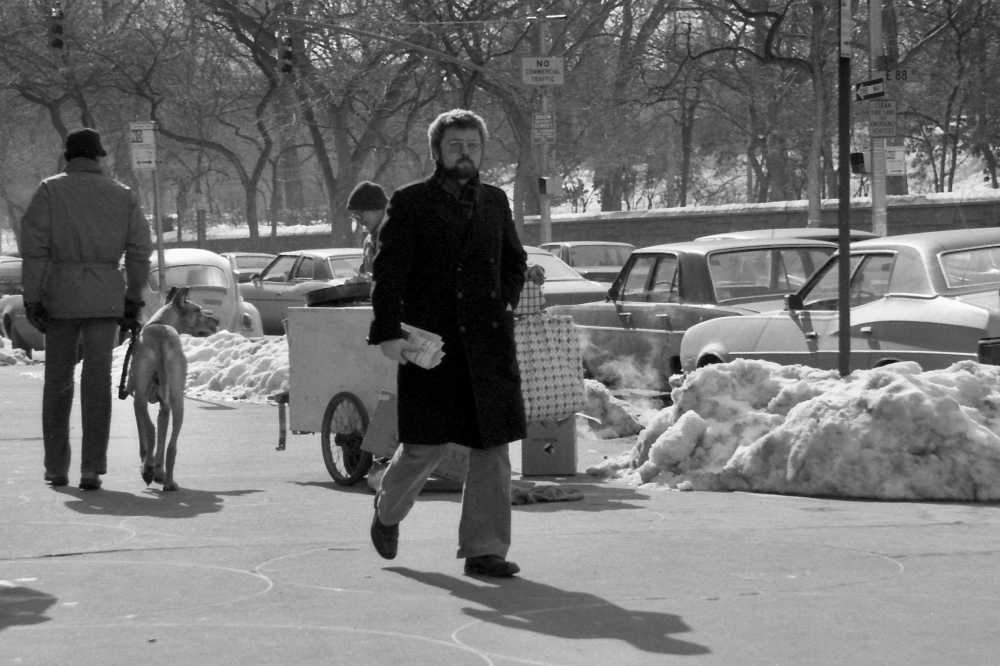

People on 6th Avenue, 1974

Dapper dude on 23rd Street, 1970s
People on 6th Avenue, 1974

Rockefeller Center, 1974, watching a parade
Dapper dude on 23rd Street, 1970s

St Mark’s Place, 1968

Fascination, 1985, on 42nd Street.
There was another Fascination on Broadway around 49th Street that was much better.

Christopher Street, 1979
Sullivan and Houston in the snow, 1982
Your collection of photos is amazing - thanks for doing this! I was a horse-drawn carriage driver in Central Park for 4 years in the early 70s and don't have a single photo of myself doing it - hoping to find me here somewhere! The stable was on 38th between 10th and 11th Avenue and every day I drove the carriage right through Times Square, in all it's gritty glory.
Wow, that must’ve been a trip and a half!

Coney Island, New York. July , 1977. An unidentified couple stand together in the graffiti covered subway door confronting the camera from a distance.
© Harold Feinstein
Do you have pictures from Inwood? Especially in the 1980s
Nothing I know of offhand. I might have some mixed in with these:

5th Ave and 88th Street, 1979. Hungry dog.

James Baldwin, dans les rues de New York, le 19 juin 1963.
AP Photo/Dave Pickoff

Looking uptown on Broadway at 88th, 1979

Looking uptown from 88th Street, at the corner of 90th and Broadway, 1975

42nd Street, New York, Neil Libbert, 1960

Playboy on the 2
Sade in Alphabet City, 1982
Looking down the tracks toward Manhattan and an approaching 7 train of Redbirds from 46th Street/Bliss Street westbound platform, with a really really good view of the signal. Above the oncoming train is the silhouette of the Empire State Building. A more mundane but infinitely more helpful detail is the Center Theater visible a couple of blocks away down on Queens Boulevard: the photo still retained enough sharpness to see that “Pet Sematary” was showing, enabling this photo, just scanned today, to be dated as 1989.
Currently the New York Transit Museum is paying tribute to the Redbirds with an exhibit marking their 60th anniversary with an exhibit called “Reign of the Redbirds,” running until September 2020. What was the attraction of these cars? “Boxy and industrial-looking, these vehicles became synonymous with New York City and are as iconic as the subway token.” (NYTM)
In Subway Memories, Camilo José Vergara spoke with transit workers about the Redbirds: “They were supposed to be the worst subway cars and proved to be the best; they required little maintenance,” said one. A historian likened them to the Model T Ford: “The Ford Model T had once been called an underdog and an ugly duckling, but it became endearing through its endurance. Machines like that are loved because everyday people who make things work project themselves onto them.”
Malcolm X in Harlem, 1963
Sweet hats in Harlem
Hmmm…. Shoes or porn?…
Jenny Holzer